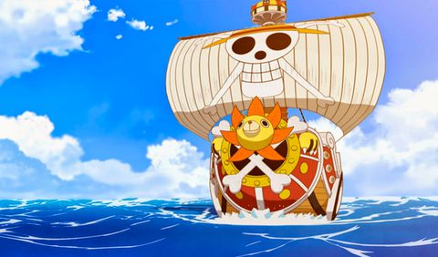

Los Piratas de Sombrero de Paja, principalmente conocidos como la Banda de Sombrero de Paja , es una banda de piratas originaria del East Blue, pero tiene miembros de diferentes partes del mundo. Ellos son el foco y los principales protagonistas de la trama del manga y el anime de One Piece, siendo capitaneados por el protagonista principal de la serie, Monkey D. Luffy. Se les conoce como los de «Sombrero de Paja», por el característico sombrero de su capitán, el cual le fue cedido por Shanks el Pelirrojo, y fueron conocidos como «Piratas de Sombrero de Paja» gracias a Smoker en Arabasta. La banda navegó en el Going Merry, su primer barco oficial, hasta el arco de Water 7. Durante el arco del regreso a Water 7, Franky e Iceburg les construyeron un nuevo barco, al que Iceburg llamó Thousand Sunny, a pesar de las proposiciones de nombres por parte de los miembros de la tripulación. Actualmente, los Piratas de Sombrero de Paja están constituidos por diez miembros cuyas recompensas suman un total de Belly3.161.000.100. Tras los eventos acaecidos en el Archipiélago Sabaody, los primeros nueve miembros fueron separados unos de otros. Durante dos años todos entrenaron en sus relativos destinos en los que cayeron tras la separación, llegando a ser más poderosos para ayudarse los unos a los otros. Pasado el tiempo se reunieron de nuevo y desde entonces se han convertido en un gran poder activo en el Nuevo Mundo, agregando además a la tripulación a un antiguo miembro de los Siete Guerreros del Mar, Jinbe. Incluso han logrado tomar posesión de una de las armas vivientes de la miembro de los Cuatro Emperadores Big Mom, Zeus, quien es ahora un siervo incondicional de Nami y una nueva arma para la tripulación.
